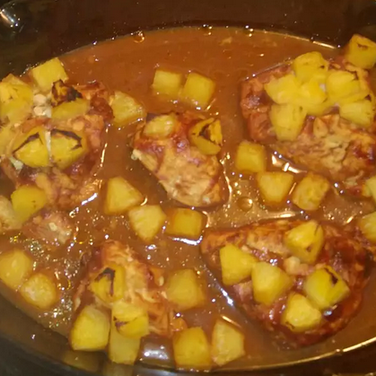

Pineapple Chicken

Description
This recipe tastes best with a Hawaiian style BBQ sauce, but if one isn't available, just use your own favorite. Every time I fix this, everyone LOVES it! There are usually no leftovers.
Ingredients
- 6 skinless, boneless chicken breast halves
- 1 green bell pepper, sliced
- 4 medium red potatoes, sliced
- 1 (20 ounce) can sliced juice-packed pineapple, drained, juice reserved
- 1 (18 ounce) bottle barbeque sauce
Steps
- Preheat oven to 450 degrees F (230 degrees C). Lightly grease a medium baking dish.
- Place the chicken in the baking dish. Arrange pepper, potatoes, and pineapple around chicken. Pour the reserved pineapple juice over all, and top with barbeque sauce.
- Bake 1 hour in the preheated oven, or until chicken juices run clear and potatoes are tender.